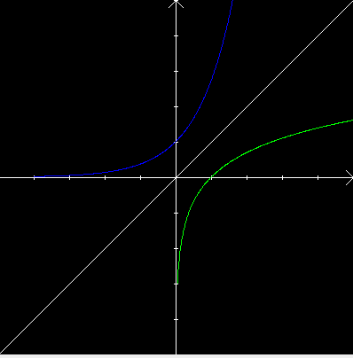

| Choisissez votre langue ! | Choose your language ! |
Définition
La fonction logarithme népérien, est continue et strictement croissante de ]0,+∞[ sur ]-∞,+∞[.Il en résulte aussitôt par le que :
Definition
The natural logarithm function is continuous and strictly increasing from ]0,+∞[ to ]-∞,+∞[.It follows immediately by the that :
propriété 1
ln admet une fonction réciproque g définie sur ]-∞,+∞[, à valeurs dans ]0,+∞[, continue, croissante.
property 1
ln admits an inverse function g defined on ]-∞,+∞[, with values in ]0,+∞[, continuous, increasing.
Voici en vert le graphe de ln et en bleu le graphe de sa réciproque g. Comme toujours, les deux sont symétriques par rapport à la première diagonale.
Here is the graph of ln in green and the graph of its reciprocal g in blue. As always, both are symmetrical with respect to the first diagonal.

En outre ln est dérivable de dérivée partout non nulle et ln'(x)=1/x.
Moreover ln is differentiable with everywhere non-zero derivative and ln'(x)=1/x.
propriété 2
Il en résulte par le que si g est la réciproque de ln, g vérifie l'équation g'=g.
property 2
The result is by the that if g is the reciprocal of ln, g verifies the equation g'=g.
En effet g'(y)=1/ln'(x)=1/(1/x)=x=g(y).
Equation fonctionnelle satisfaite par la réciproque de ln
Indeed g'(y)=1/ln'(x)=1/(1/x)=x=g(y).
Functional equation satisfied by the reciprocal of ln
propriété 3
De l'équation ln(xy)=ln(x)+ln(y) nous déduisons si g est la réciproque de ln : g(x+y)=g(x)g(y)
property 3
From the equation ln(xy)=ln(x)+ln(y) we deduce if g is the inverse of ln : g(x+y)=g(x)g(y)
Ceci entraîne immédiatement :
This immediately leads :
propriété 4
g(nx)=g(x)n pour n entier et tout réel x. g(-x)=1/g(x) pour tout réel x
g(sx)=g(x)s pour tout s rationnel et tout réel x.
property 4
g(nx)=g(x)n for any integer n and any real x. g(-x)=1/g(x) for any real x.
g(sx)=g(x)s for any rational s and any real x.
En outre puisque ln(e)=1 on a :
Moreover since ln(e)=1 we have:
propriété 5
g(1)=e et donc g(s)=es pour tout s rationnel.
property 5
g(1)=e and hence g(s)=es for all rational s.
Cela suggère la notation suivante pour la fonction g.
This suggests the following notation for the function g.
définition 1
Nous poserons pour tout x (rationnel ou non) ex=g(x), et nous appelerons g la
'fonction exponentielle'
(de base e).
definition 1
We will set for all x (rational or not) ex=g(x), and we will call g the
'exponential function'
(with base e).
Avec cette nouvelle notation les résultats vus précédemment peuvent s'exprimer :
With this new notation the results seen previously can be expressed:
propriété 6
eln(x)=x pour tout réel x > 0 ln(ex)=x pour tout x réel
(ex)'=ex
ex+y=exey pour tout couple de réels (x,y)
Si s est rationnel avec s=p/q et p, q entiers et p > 0, \( \displaystyle e^{s}=\sqrt[q]{e^{p}} \)
property 6
eln(x)=x for any real number > 0 ln(ex)=x for any real number xl
(ex)'=ex
ex+y=exey for any pair of real numbers (x,y)
If s is rational with s=p/q and p, q integers and p > 0, \( \displaystyle e^{s}=\sqrt[q]{e^{p}} \)
Vitesse de croissance de la fonction exponentielle
De l'étude de la fonction ln et du fait que l'exponentielle est sa réciproque, nous concluons immédiatement que :Exponential function growth rate
From the study of the ln function and the fact that the exponential is its reciprocal, we immediately conclude that:propriété 7
\( \displaystyle \lim_{x \to +\infty}e^{x}=+\infty \)
et
\( \displaystyle \lim_{x \to -\infty}e^{x}=0+ \)
property 7
\( \displaystyle \lim_{x \to +\infty}e^{x}=+\infty \)
and
\( \displaystyle \lim_{x \to -\infty}e^{x}=0+ \)
Et comme ln tend vers l'infini plus lentement que toute puissance positive de x quand x tend vers l'infini, il en résulte que ex tend vers l'infini plus vite que toute puissance de x, c'est à dire :
And since ln tends to infinity more slowly than any positive power of x as x tends to infinity, it follows that ex tends to infinity faster than any power of x, that's to say :
propriété 8
\( \displaystyle \lim_{x\to \infty}\frac{e^{x}}{x^{n}}=0 \)
pour tout entier positif n.
property 8
\( \displaystyle \lim_{x\to \infty}\frac{e^{x}}{x^{n}}=0 \)
for any positive interger n.
Développement en série entière
Nous avons déjà rencontré une fonction satisfaisant la même équation fonctionnelle que la fonction exponentielle. Cette fonction que nous avions noté exp(x) était définie ainsi: We have already encountered a function satisfying the same functional equation than the exponential function. This function that we noted exp(x) was defined as follows:
\( \displaystyle exp(x)=\sum_{n=0}^{\infty}\frac{x^{n}}{n!} \)
La ayant un rayon de convergence infini. Par ailleurs, nous avons vu dans , que la fonction exp vérifie exp'(x)=exp(x). Il est facile de voir que la fonction exponentielle est strictement croissante et positive pour x > 0 et que comme exp(-x)=1/exp(x) elle est également strictement croissante et positive pour x < 0. Cette fonction ne s'annule donc jamais. En conséquence ln(exp(x)) est toujours défini.
Si h désigne la composée de ln avec exp, le théorème des fonctions composées nous donne h'(x)=1.
Il en résulte que h(x)=x+k où k est une constante. Faisant x=0 il vient immédiatement k=0.
En définitive ln(exp(x))=x et exp est bien la fonction réciproque de ln.
Ce qui peut encore s'exprimer ainsi :
Si h désigne la composée de ln avec exp, le théorème des fonctions composées nous donne h'(x)=1.
Il en résulte que h(x)=x+k où k est une constante. Faisant x=0 il vient immédiatement k=0.
En définitive ln(exp(x))=x et exp est bien la fonction réciproque de ln.
Ce qui peut encore s'exprimer ainsi :
The having an infinite radius of convergence. Moreover, we saw in , that the function exp checks exp'(x)=exp(x). It is easy to see that the exponential function is strictly increasing and positive for x > 0 and that since exp(-x)=1/exp(x) it is also strictly increasing and positive for x < 0. This function is therefore never cancelled. Therefore ln(exp(x)) is always defined.
If h denotes the composite of ln with exp, the composite function theorem gives us h'(x)=1.
It follows that h(x)=x+k where k is a constant. Doing x=0 it immediately comes k=0.
Ultimately ln(exp(x))=x and exp is indeed the reciprocal function of ln.
Which can also be expressed as:
If h denotes the composite of ln with exp, the composite function theorem gives us h'(x)=1.
It follows that h(x)=x+k where k is a constant. Doing x=0 it immediately comes k=0.
Ultimately ln(exp(x))=x and exp is indeed the reciprocal function of ln.
Which can also be expressed as:
propriété 9
Pour tout réel x,
\( \displaystyle e^{x}=\sum_{n=0}^{\infty}\frac{x^{n}}{n!} \)
property 9
For any real number x,
\( \displaystyle e^{x}=\sum_{n=0}^{\infty}\frac{x^{n}}{n!} \)
|
Création Gilles Dubois
Created by Gilles Dubois
|
Janvier 2022
January 2022
|
Version mobile Jquery
Mobile Jquery version
|
|